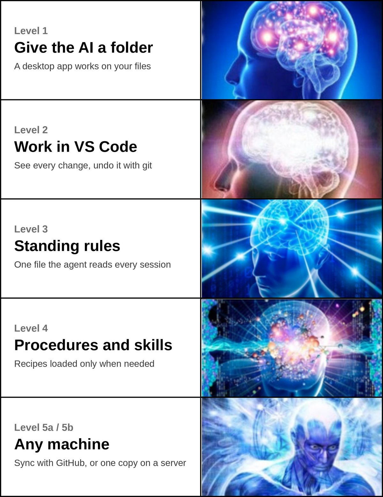

Five Levels of AI Agents for Research
An agent is a chatbot that works inside a folder on your computer: it reads your files, writes new ones and runs code, instead of waiting for you to paste things in. This guide climbs from the simplest setup to the most capable one in five levels, like the galaxy-brain meme below. Stop at whichever level fits your work.

The guide explains why each level exists. It leaves the how to your own AI, because tools change every few months and your AI knows your setup better than any tutorial. Each level ends with a prompt: paste it into the AI tool you use (Claude, ChatGPT, Gemini or another) and it will walk you through that step for your tool and project.
Level 0: I assume everyone is familiar with using chatbots like ChatGPT, Gemini or Claude on a browser.
| Level | What you add | Problem it solves |
|---|---|---|
| 1 | A desktop app connected to a folder | Copying data and code back and forth between you and a chatbot |
| 2 | VS Code, an AI extension, git | Not seeing or being able to undo what the agent changed |
| 3 | AGENTS.md |
Re-explaining your project in every session |
| 4 | Procedures and skills | Re-explaining the same task every time it comes up |
| 5a | A git remote and progress.md |
Losing continuity when you switch computers |
| 5b | The project on a university server | Keeping several copies in sync (an alternative to 5a) |
Two running examples show what each level means in practice:
- Data analysis: a year of soil-moisture readings from 12 field plots under two irrigation treatments, to be cleaned, analyzed and turned into figures.
- Writing: a three-year grant proposal with a strict page limit and a set of required sections.
Level 1: Give the AI a folder
The problem. With a chatbot, you are the go-between: you paste data in, copy code out, run it, paste back the error, and repeat. The AI never sees your actual files.
What you add. The desktop app of Claude, ChatGPT or Gemini, connected to one project folder. The agent now does that loop itself: it opens the files, writes code, runs it, fixes errors and saves results next to your data. It asks permission before acting, and you approve each step.
Some apps split chat and agent/code modes into separate tabs or a toggle — Claude’s desktop app and ChatGPT’s both work this way — and you must switch manually; the app won’t do it for you. If the agent isn’t touching your files, check you’re in the right mode.
soil-moisture-2026/
├── data/raw/ ← originals: the agent reads, never edits
└── output/ ← figures and tables the agent createsIn the examples. Data: “Look at the logger files, report gaps and impossible values, and plot moisture over time for each plot.” Grant: drop in the funder’s call and your recent papers, then ask “List every requirement in this call and check my draft aims against them.”
Prompt to paste:
I'm a university researcher and want to start using an AI agent that works directly on files in a project folder on my computer, through a desktop app. First ask me which AI tool I use, my operating system, and what my project is. Then explain how to install the app, connect it to one folder, and what the permission prompts mean. If you can search the web, check the current documentation first, since these apps change often. Finally, suggest a first small task I could try with my own files.Level 2: Work in VS Code
The problem. Desktop apps show the conversation well but the files poorly. It is hard to see which files changed, compare before and after, or undo a bad edit.
What you add.
- VS Code (a free editor) with your AI’s extension: Claude Code, Codex, Gemini or GitHub Copilot. You see the file tree, open data and scripts side by side, and see each edit the agent makes as a highlighted change.
- Git, a version history for the folder. The agent can touch five files in one request; git groups that into a single reviewable snapshot, so you see exactly what changed and can revert it in one click, unlike Dropbox or Google Drive, which only version files one at a time with no sense of “before this prompt.” VS Code’s Source Control panel makes it usable without the command line, and the agent can set it up for you.
- Past sessions. The extension keeps your earlier conversations, so you can resume one instead of starting from scratch.
In the examples. Data: the agent writes scripts/01_clean.py, and you read it before it runs. When a cleaning step goes wrong, you revert it in one click. Grant: each section is a file in draft/, so you see exactly which sentences the agent rewrote.
One caution: if your project folder lives inside Dropbox, Google Drive or OneDrive, don’t set up git there. Two sync systems watching the same files can cause sync conflicts and leave the repository in an inconsistent state. Either put git outside the synced folder, or pick one or the other for this project.
Prompt to paste:
I use an AI agent on a research project folder and want to move to VS Code with an AI extension, plus git for version history. First ask me which AI tool I use and my operating system. Then explain: which extension to install, how to open my project folder, how to see and undo the agent's changes, how to resume past sessions, and how to set up git using VS Code's Source Control panel. I've never used git, so explain it in plain terms. If you can search the web, check the current documentation first.Level 3: Standing rules
The problem. You can resume a past session, but very long sessions become less effective: the agent loses track of early details, and starting fresh often works better. A new session knows nothing about your project, so you re-explain what the data is, where things are, and what must never happen. Forget one rule, and the agent breaks it.
What you add. A short file of standing rules that the agent reads at the start of every session. Its name depends on the tool: Claude Code reads CLAUDE.md, Gemini CLI reads GEMINI.md, and most others read AGENTS.md. Your AI knows which name it expects. Below, AGENTS.md stands for whichever name your tool uses.
project/
├── AGENTS.md ← the rules, under a page
│ (CLAUDE.md for Claude Code, GEMINI.md for Gemini CLI)
├── data/
└── scripts/Write rules the agent can check itself against. “Be rigorous” changes nothing. “Every parameter needs units and a source” does. When the agent does something you didn’t want, add a rule rather than only correcting it in the chat.
A short AGENTS.md might read:
# Soil moisture project
Logger data from four plots, 2024-2026. Goal: drying-rate model for the paper.
## Rules
- Never modify files in `data/raw/`.
- Log every cleaning decision in `output/cleaning_log.md`.
- Don't drop outliers without asking me first.
- Units on every parameter, always.In the examples. Data: “Never modify data/raw/. Log every cleaning decision in output/cleaning_log.md. Don’t drop outliers without asking me.” Grant: “Cite only sources in references.bib, and never invent a reference. Mark gaps with [CITATION NEEDED]. No hype words.”
Prompt to paste (into the agent, inside your project folder):
Create the file of standing project instructions that you read at the start of every session, using the file name your tool expects. First look through the folder and ask me what the project is, how it's organized, and which rules matter most to me. Keep it short: what the project is, where things are, how to run things, conventions, and things to never do. Use concrete rules you can check yourself against, not vague ones. Explain each part as you write it.Level 4: Procedures and skills
The problem. Some tasks come up again and again: a statistical analysis done your group’s way, figures in your house style, the final check before submitting. Putting every step of each in AGENTS.md makes it long, and the agent reads all of it every time, even when it isn’t relevant.
What you add. One procedure file per recurring task, in its own folder, listed in AGENTS.md with a line saying when to use it. The agent opens a procedure only when that task comes up. For procedures you use often, a skill goes one step further: a short description lets the agent recognize the task and load the procedure by itself, without being told.
project/
├── AGENTS.md ← "Before a statistical analysis,
│ read agent-docs/statistics.md"
└── agent-docs/
├── statistics.md
├── plotting-style.md
└── grant-review.mdA good rule of thumb: when you notice yourself explaining the same steps a second time, ask the agent to turn them into a procedure.
A plain procedure file is just Markdown, like agent-docs/statistics.md:
# Statistics procedure
Use when: running any statistical test for this project.
1. When observations are not independent (repeated measures, nested plots),
account for that dependence, and explain the proposed model and its
assumptions before fitting it.
2. Always report effect sizes with 95% confidence intervals, not just p-values.
3. State the model and software version used in the methods section.A skill adds a short header so the agent can find it on its own, without AGENTS.md pointing to it:
---
name: statistics
description: Use when running any statistical test or reporting results for this project.
---
1. When observations are not independent (repeated measures, nested plots),
account for that dependence, and explain the proposed model and its
assumptions before fitting it.
2. Always report effect sizes with 95% confidence intervals, not just p-values.
3. State the model and software version used in the methods section.In the examples. Data: statistics.md says to flag non-independent observations and justify the model choice before fitting, and to report effect sizes with confidence intervals. Grant: grant-review.md has the agent review a draft as a skeptical panel member would, against the funder’s evaluation criteria.
Prompt to paste (into the agent, inside your project folder):
I want to store step-by-step procedures for tasks I repeat in this project. Create an agent-docs/ folder and add a section to my standing-instructions file listing each procedure and when to use it. Start by asking me which tasks I repeat, then write the first procedure with me. Also explain what "skills" are in the tool I use, how they differ from plain procedure files, and when it would be worth turning a procedure into a skill. If you can search the web, check your tool's current documentation on skills first.Level 5a: Sync copies across machines
Level 5 has two versions that solve the same problem: keep synced copies on each computer (5a), or keep a single copy on a server (5b). Pick one.
The problem. You work on the lab desktop, then on your laptop at home. If the project is already synced through GitHub, Dropbox or Google Drive, the files follow you, but the agent’s session history stays on the first machine, so the second agent doesn’t know what was decided yesterday. You become the memory between them.
What you add.
- A git remote (GitHub; your university may have its own server). Push from one machine and pull on the other, so code, drafts and rules travel together.
- A progress file,
progress.md. A rule inAGENTS.mdtells the agent to read it at the start of every session and update it at the end: what was done, what was decided, what comes next. It replaces the session history that doesn’t travel.
project/
├── AGENTS.md ← "Read progress.md first; update it before ending"
├── progress.md ← done · decided · next
└── .gitignore ← keeps large data out of gitTwo cautions. Large data files don’t belong in git: keep them on shared storage and note their location in AGENTS.md. And don’t put a git folder inside Dropbox or OneDrive, because two sync systems on the same files can cause sync conflicts and leave the repository in an inconsistent state.
If a collaborator uses a different AI tool, ask your agent to make the rules file readable by both, for example a CLAUDE.md that points to AGENTS.md.
In the examples. Data: progress.md records “Plot 3 values above 0.6 excluded (sensor fault, confirmed by field notes). Next: drying-rate model.” Grant: “Aims 1–2 drafted, aim 3 waiting for co-PI input. Background is 0.4 pages over the limit.”
Prompt to paste (into the agent, inside your project folder):
I work on this project from more than one computer. Help me set up: (1) a private GitHub repository and the routine for pushing and pulling (first ask whether my university has its own Git server), (2) a .gitignore that keeps large data files out of git, and (3) a progress.md file, plus a rule in my standing-instructions file telling you to read it at the start of each session and update it at the end with what was done, decisions made, and next steps. Ask me where my large data lives.Level 5b: One copy on a server
The problem. Option 5a still leaves several copies of the project to keep in sync, and large datasets often already live on the university’s computing cluster rather than on your laptop.
What you add. VS Code’s Remote-SSH feature, which opens a folder on the cluster as if it were on your own computer. The AI extension runs on the server, next to the files. Any laptop you connect from sees the same single copy, and the same session history, because the history is stored on the server too.
laptop ──┐
├── VS Code Remote-SSH ──▶ cluster: ~/projects/soil-moisture-2026/
lab PC ──┘ (files, data, agent, history)Before you start, check four things:
- Login nodes are not for heavy computing. Add a rule to
AGENTS.mdthat heavy jobs go through the cluster’s scheduler (often Slurm). - The server needs internet access to reach the AI provider. Some clusters block outgoing connections, so ask your IT team.
- Restricted data. Some clusters hold data that may not be sent to outside services.
- Keep using git. You no longer need it to sync, but it is still your history and your undo button.
In the examples. Data: the agent writes the analysis, submits it as a cluster job over the full multi-year dataset, and plots the results when the job finishes. Grant: less needed. A writing project is small, so option 5a is usually enough.
Prompt to paste:
My university has a computing cluster that I can log into with SSH. I want to work on a research project there through VS Code's Remote-SSH, with my AI agent's extension running on the server. Ask me which AI tool I use and what you need to know about the cluster. Then explain how to connect, how to install the extension on the remote side, and what to check with IT: outgoing internet access, data policies, and the job scheduler. Also suggest rules to add to my standing-instructions file so that you submit heavy jobs to the scheduler instead of running them on the login node.At every level: trust, but verify
The agent is a fast, tireless assistant. The scientific judgment stays with you.
- Give it a target to hit. Analyses checked against something known (a published result, an existing tool’s output, or simulated data with a known answer) work best. That was the pattern in the strongest projects of OpenAI’s field report on agent-assisted scientific computing.
- Check citations and numbers yourself. Agents can be confidently wrong and can attribute a claim to the wrong paper.
- Keep results in files, not in the chat. A script can be re-run and reviewed. A number that appears only in a chat answer cannot.
- Think before adding sensitive data. Files the agent reads are sent to the AI provider. Check your university’s policy on personal, medical or confidential data, and the funder’s policy on AI-assisted writing.
- Reproducible isn’t the same as correct. Git tells you exactly what the agent did; it says nothing about whether the scientific reasoning behind it was sound. An agent can decide, on its own, how to handle missing data, which model to fit, or which outliers to drop — decisions that need your judgment, not just mechanical ones like file naming or formatting. Ask it to flag which kind of decision it’s making.
- Use approval checkpoints for consequential choices. Let the agent work independently on routine steps, but have it stop and wait before anything that changes the analysis. For example: “Explore three approaches to handling missing observations. Don’t change the original data. Compare the implications and recommend one, but wait for my approval before applying it to the main analysis.”
Prompt to paste, at any level, to review a setup:
Here is how I've set up my research project for working with an AI agent: [paste your folder structure and standing-instructions file]. Explain what each part does and point out anything missing, risky or unclear. Then suggest the single most useful improvement.